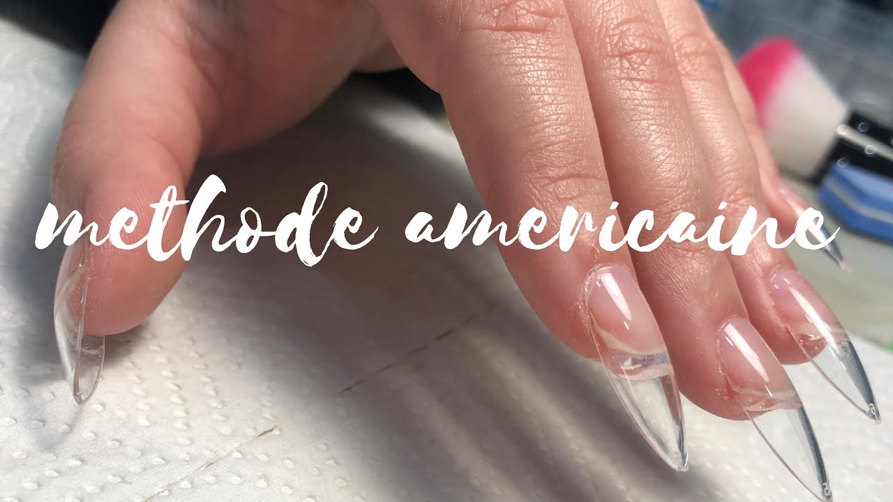
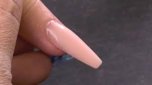
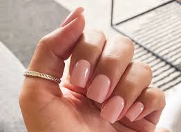

Pourquoi faire ses ongles?
Faire ses ongles permet de se sentir plus fémimine et donc avoir plus confiance en soi. Ça permet aussi rajouter de la couleur en hiver comme en été ou de paufiner une tenue.
Differents types de poses

Pose americaine

Acrylique

Gel
Quelle pose choisir?
- la pose américaine - Pour toutes les personnes qui veulent des ongles au rendu naturel. Avec une tenue parfaite sur toutes les personnes qui pratiquent un sport tel que le karaté, la boxe, l’escalade : vos ongles subissent des chocs, vous vous les rongez, cette technique est donc pour vous !
- l'acrylique - Ce produit est très solide et convient ainsi parfaitement aux poses plus longue : idéal pour les évènements comme pour la vie de tous les jours : aucun risque de casse !
- le gel - Cette méthode convient ainsi à un grand nombre de personnes qui souhaitent un résultat naturel. Il tient très bien si vous avez souvent les mains dans l’eau. Vous avez souvent les mains dans l’eau ? Vous êtes coiffeuse ? Vous pratiquez la natation… ? Cette technique est donc faite pour vous !